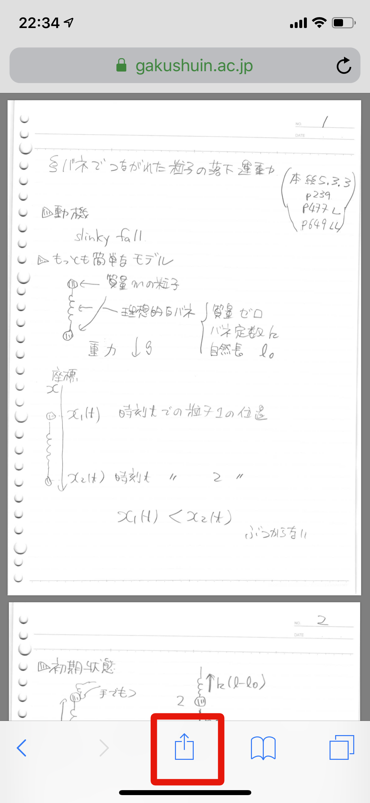
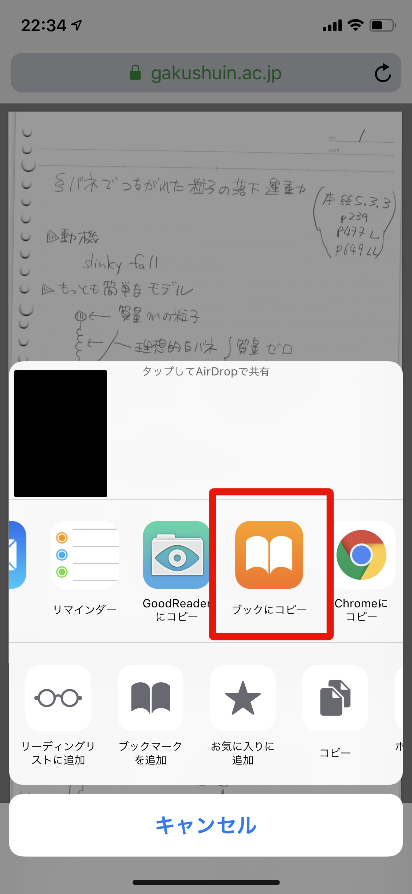
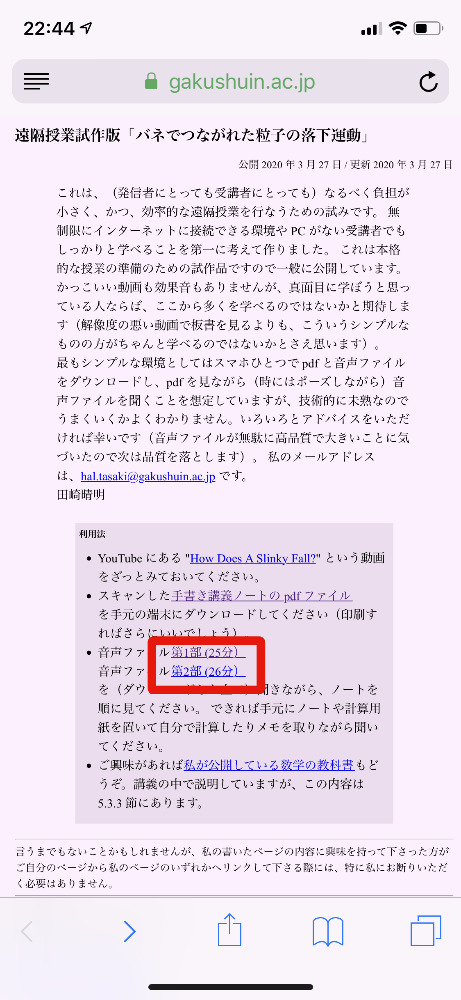
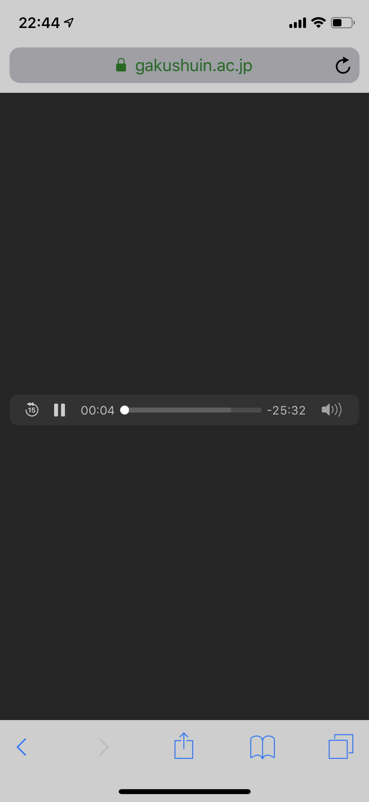
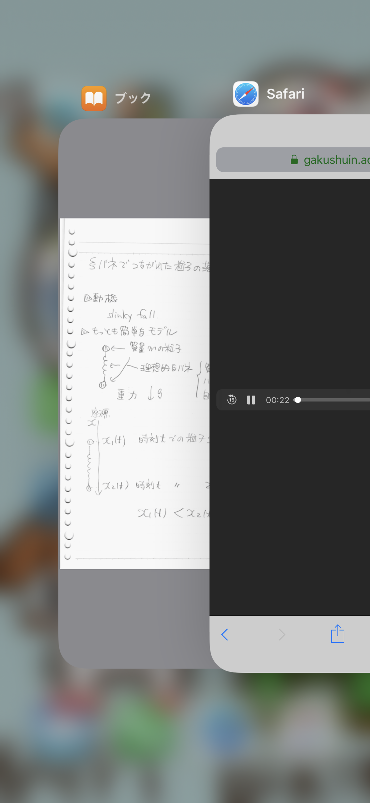
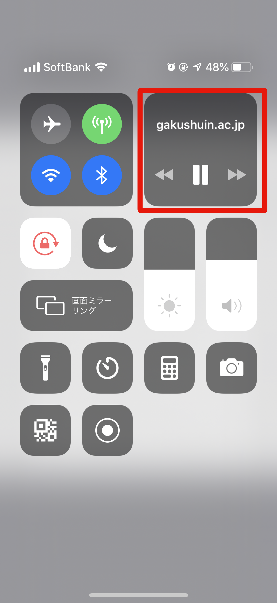

元のページへ
iPhone での聴講のしかた
公開 2020 年 3 月 28 日 / 更新 2020 年 3 月 28 日
以下、KT さんに教えてもらったことをそのまま掲載します（あまり時間がないのでいい加減なデザインのページで申し訳ありません）。
画像もご提供いただきました。
講義ノートのダウンロード
何らかの pdf 閲覧アプリを用意してください。
以下では、iPhone に初期インストールされているブックアプリを使用した場合の例を示します。
PDFファイルのリンクをブラウザ(Safari)で開く。
画面下部メニューの真ん中のボタンをタップ。

開いたメニューから「ブックにコピー」を選択。

ブックアプリが開きPDFが閲覧可能になる(はず）。
（iOS が新しいと、この部分の手続きが少し簡略になるかもしれません。）
音声ファイルの再生
音声ファイルのリンクをタップする。

音声再生がはじまることを確認（以下のような画面になるはず)。

講義を聞く
アプリの切り替えでPDF閲覧アプリを開く(iPhoneXでの例)。コントロールセンターの再生対象が gakushuin.ac.jp になっていれば成功です。

音声が流れつつ、PDF が閲覧できます。

切り替え後音声が流れない/音声を一時停止したい場合は、コントロールセンターを表示して、操作できます。
元のページへ
言うまでもないことかもしれませんが、私の書いたページの内容に興味を持って下さった方がご自分のページから私のページのいずれかへリンクして下さる際には、特に私にお断りいただく必要はありません。
田崎晴明
学習院大学理学部物理学教室
田崎晴明ホームページ
hal.tasaki@gakushuin.ac.jp